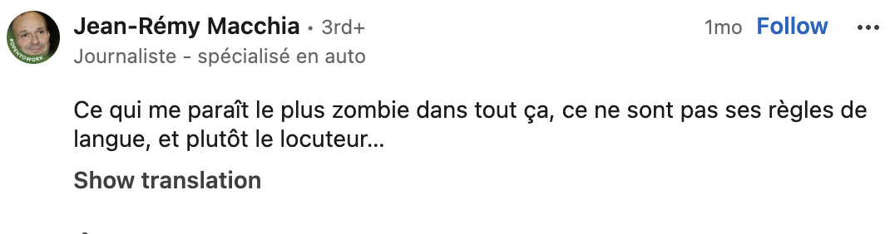
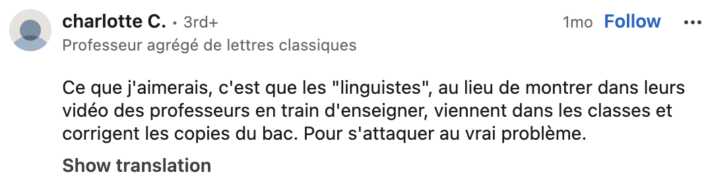
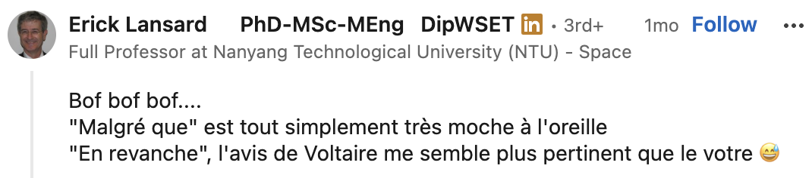
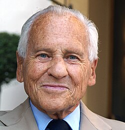
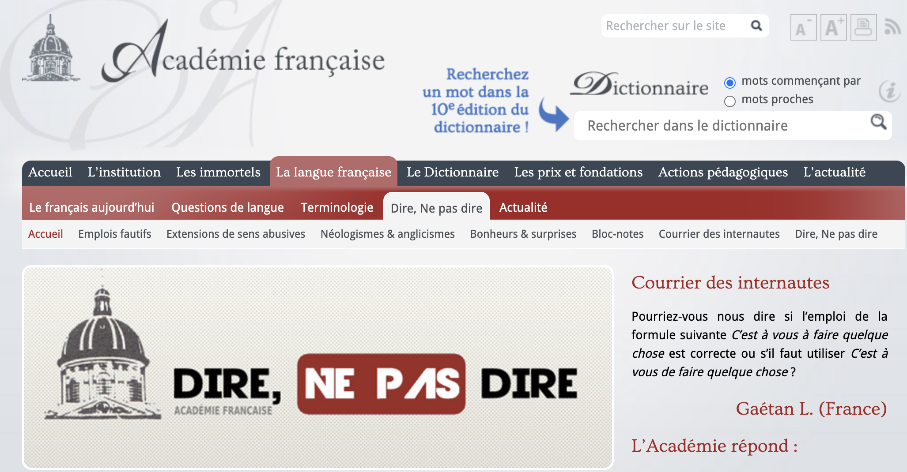

1 Cours d’introduction
Bienvenue au cous de français moderne !
1.1 Qui ?
Jérémy Genette, Dr. en Linguistique (Université d’Anvers)
Phonéticien et phonologue (de laboratoire)
et vous ?
1.2 Pourquoi ce cours ?
Vous êtes des spécialistes de la langue française et dans votre future activité professionnelle…
En réponse à une vidéo descriptive réalisée par un linguiste (Lien vers la vidéo)



1.3 Évaluation
1.3.1 Travail écrit
1.3.2 Présentation
1.4 Méthodologie de la recherche en linguistique française
1.5 La ou les grammaires ?
1.6 Les institutions de la langue française
1.6.1 L’académie française
« L’académie française a été instaurée par Richelieu gardienne de la langue » — Académie française
↔︎
« Depuis le XIXe siècle, l’académie française ne suit plus l’évolution de la langue » — Les linguistes atterrés
Quel est son rôle ?
Institution d’Ancien Régime fondée en 1635
Selon ses statuts, elle doit rédiger ” promptement ” 😝 un dictionnaire et une grammaire dans le but de ” donner des règles certaines à notre langue et à la rendre pure, éloquente et capable de traiter les arts et les sciences
1er dictionnaire en 1694: objectif élitiste assumé pour “distinguer les gens de lettres d’avec les ignorants et les simples femmes”
Au total 9 éditions, la dernière en 2026
Mais beaucoups de critiques !
Un best-of : 😅
bisou absent
mail est défini comme gros marteau ou une promenande plantée d’arbres
femme est définie comme capable de concevoir et de mettre au monde des enfants
racisme
homophobie
etc.
L’Académie n’a jamais publié une grammaire
Jusqu’au XIXe siècle, ils ont bien essayé d’avoir un regard (timide) mais critique sur l’orthographe et ont simplifié certaines graphies
Ex. pluriels en -x comme loix et roix
Ex. certains -h comme autheur et rhythme
1.7 Fin XIXe siècle
Gaston Paris est un exemple d’académicien non puriste
L’enseignement du français doit ” sortir de ces marécages ” de règles, “être plus fructueus pour l’esprit et un peu moins dangereus pour le sens”
Il applique un réforme de l’orthographe, par exemple, fructueus, dangereus
Erreurs de copistes -us abrégé en -x
Comparez avec des mots récents comme sous, pneus, landaus
Dernier spécialiste de la langue siégeant à l’Académie
Aujourd’hui, à votre avis, combien de linguistes siègent à l’Académie ?
{kind=link}
1.8 XVIIIe siècle
{kind=link}
1.9 XXe siècle
La façon dont écrivent actuellement la plupart des Français et notamment les futurs professeurs […] est effrayante […].
- Émile Faguet
{kind=link}
1.10 XXIe siècle
Pourquoi maltraite-t-on le français dans notre pays ? Le vocabulaire se réduit, on ignore la grammaire et la syntaxe.
- Hélène Carrère d’Encausse
À notre époque, chacun peut le constater la langue française est menacée. De l’extérieur, par la montée en puissance de l’anglo-saxon. De l’intérieur, par un délabrement plus grave encore et aux causes multiples
- Jean d’Ormesson

1.10.1 Depuis 2011

1.11 Le pouvoir de l’Académie
Sur la langue, aucun…
Mais un prestige et une influence qui ont un impact
Empêché l’application de l’arrêté du ministre Leygues de 1900 (soutenu par des linguistes)
Bloqué la féminisation des noms de métiers jusqu’en 2019
Contrairement aux académies espagnole, suédoise, polonaise, roumaine, etc., elle n’a pas pour but de nous instruire sur la langue et son évolution
Elle cherche à ” entretenir une certaine idée de la France, et nourrir la peur du déclin ” (Abeillé 2026)
En théorie, selon les statuts de l’Académie mêmes: ” Les règles générales qui seront faites par l’Académie touchant le langage sront suivies par tous ceux de la Compagnie, tant en prose qu’en vers. “
Mais on verra qu’ils ont eux-mêmes tendance à ne pas respecter leurs propres règles

1.12 Conseil supérieur de la langue française
1.13 En Belgique 🇧🇪
1.13.0.1 Conseil supérieur de la langue française de Belgique
1.13.0.2 La Direction de la Langue française
1.14 En France 🇫🇷
1.15 Au Canada 🇨🇦
1.16 En Suisse 🇨🇭
1.17 Séances thématiques
Si on vous dit: C’EST FAUX !
Pourquoi ?
Depuis quand ?
Où est la règle ?
1.18 Séances thématiques
Si on vous dit: C’EST FAUX !
Pourquoi ?
Depuis quand ?
Où est la règle ?
2 La linguistique de corpus
Objectif
Étudier les phénomènes linguistiques à partir de méthodes quantitatives, testables et mesurables.
Utiliser des méthodes scientifiques pour examiner comment la langue est acquise, représentée et traitée dans le cerveau, et comment nous pouvons la produire.
Démarche
Manipuler systématiquement des variables pour mesurer la langue.
Examiner la relation entre variables indépendantes et dépendantes.
Méthodes
Recherche expérimentale
Recherche par corpus
Corpus
Outil puissant pour étudier : acquisition, traitement, variation sociolinguistique, changement sémantique, etc.
Pourquoi utiliser des corpus ?
Progrès technologiques et méthodologiques, tendance vers des résultats objectifs, mesurables et reproductibles.
Rôle reconnu de la co-occurrence des phénomènes linguistiques dans l’acquisition et le traitement.
Définition
Ensemble de langues naturelles (McEnery, Xiao & Tono, 2006).
Regroupe des exemples autour d’un prototype.
Langue dans des contextes spontanés, naturels, écologiques.
Représentatif d’une langue ou d’un registre spécifique.
Types de corpus
Oral vs écrit
Supports variés : textes, audio, transcriptions, vidéo
Sources : synchronique/diachronique, parole L2, académique, enfant, clinique
Tailles variées. Certains “corpus” ne sont pas naturels.
Démarche du corpus
Question et hypothèses
Corpus adapté
Collecte
Analyse
Réponse à la question
Expérience musicale
Entendez-vous trois fois la même chose ?
Son 1 : G5
Son 2 : C5
Son 3 : G4
Différentes notes, différents instruments.
Taille et forme de la cavité buccale déterminent le son perçu.
Hauteur de voix : vitesse de vibration des cordes vocales.
Expérience de parole
F1 = 399 Hz, F2 = 856 Hz.
Même position de la langue, mais hauteurs différentes :
- 144 Hz, 122 Hz, 100 Hz
Entendez-vous [o] ou [u] ?
Hauteur vocalique intrinsèque (IF0)
Caractéristique universelle :
Voyelle haute = hauteur haute
Voyelle basse = hauteur basse
Hypothèses
Biomécanique : une articulation orale, une laryngale ; tension accrue → vibration plus rapide
Perceptuelle : ajout d’une différence de hauteur
Mixte
Distinction
Biomécanique : pas d’IF0 sans lien biomécanique ; IF0 sans catégories vocaliques
Perceptuelle : pas d’IF0 sans catégories ; apprentissage nécessaire
Mixte : IF0 même sans catégories, mais apprentissage reste nécessaire
Deux perspectives
Acquisition précoce
Développement avec trouble de l’audition
Acquisition précoce
Exemples : [bɑbɑ] vs [bɔbɔ], [ɦɑnt] vs [ɦɔnt]
Prédictions :
Biomécanique : développement de la hauteur
Perceptuelle : développement de la hauteur
Mixte : développement de la hauteur
Trouble de l’audition
Mêmes prédictions selon les hypothèses.
Données (acquisition précoce)
Bauer (1988) : 7 325 voyelles
Whalen et al. (1995) : 200
Gregory (2014) : 981
Cette thèse : > 37 000
Corpus : CLiPS Child Language Corpus (19 enregistrements, 6–24 mois, 30 enfants).
Enregistrements d’interactions quotidiennes.
Analyse
Sélection : voyelles hautes [i,u] et basses [a,ɑ] → 37 347 voyelles.
Analyse acoustique : détection automatique, suivi F0/F1, optimisation, exclusion des valeurs aberrantes, normalisation (Lobanov, 1971).
Résultats
Avant les premiers mots : complexité du babillage → hauteur des voyelles basses et hautes.
Après les premiers mots : développement du vocabulaire → hauteur des voyelles basses et hautes.
Trouble de l’audition
Participants : 6 ans, néerlandophones belges.
47 normo-entendants, 10 malentendants.
Tâche de répétition de pseudo-mots CVC.
Analyse
Sélection : /i, u/ (haut), /a/ (bas) → 1 471 voyelles.
Analyse acoustique identique.
Résultats
Voyelles hautes → hauteur plus élevée.
Chez les malentendants : hauteur des voyelles hautes plus basse, hauteur des voyelles basses plus haute → contraste réduit.
Conclusions sur IF0
IF0 en phase prélexicale → hypothèse biomécanique
Vocabulaire croissant = plus d’IF0 → hypothèse perceptuelle
IF0 chez les malentendants → hypothèse biomécanique
IF0 réduite à 6 ans → hypothèse perceptuelle
Synthèse : hypothèse mixte
Conclusions sur la parole humaine
Évolution biologique : conduit vocal actuel → IF0 (biomécanique).
IF0 acquiert une fonction communicative (perceptuelle).
Exaptation et adaptation.
Apports
Description plus précise de la production précoce
Description plus précise de l’effet des troubles auditifs
Éclairage sur l’origine de l’IF0
Éclairage sur les propriétés biologiques de la parole chez l’humain et le bébé
2.1 Qu’est-ce qu’un corpus ?
Ensemble de textes établi selon un principe de documentation exhaustive, un critère thématique ou exemplaire en vue de leur étude linguistique
- Trésor de la Langue Française
« Une collection de données langagières sélectionnées et organisées selon des critères linguistiques explicites pour servir d’échantillon du langage »
- John Sinclair
2.1.1 Dans quel format ?
Souvent sous un format informatique permettant son analyse grâce aux outils digitaux
EXEMPLE ICI
2.1.2 Historique des corpus
1er recueils de données linguistiques
Pour étudier une variété linguistique que l’on ne parle pas, il faut s’appuyer sur des ressources existantes
Mais pas recueillies de manière systématique

2.1.3 Historique des corpus
Début de l’informatique dans les années 60 💻
Corpus limités, mais jusqu’à un million de mots
Brown Corpus 🇺🇸
Lancaster Oslo Bergen Corpus 🇬🇧
Frantext 🇫🇷
Littérature du XIXe et XXe siècle
Pour documenter le dictionnaire Trésor de la Langue Française
Les années 80 voient la naissance de grans corpus 🕺🏻
- Accès facilité grâce à internet
2.2 Qu’est-ce que la linguistique de corpus ?
Branche de la linguistique
Objet: réflexion sur données langagières authentiques orales ou écrites
Domaine très varié. Il y a plusieurs linguistiques de corpus
| Discipline | Méthodologie |
| Un véritable cadre théorique | Appui sur des données |
| Approche guidée par les corpus | Approche basée sur les corpus |
| ❌ modèle théorique préconçu | ✅ théorique préexistant |
| ❌ prétraitement des données | ✅ études sur des données textuelles |
Dépend aussi du domaine théorique
Lexicographie, analyse automatique du langage vs syntaxe, phonologie
2.3 Exploration d’un corpus linguistique
2 objectifs possibles :
Décrire la langue en tant que système
Décrire une variété linguistique
2.4 Choix de l’outil linguistique pour explorer un corpus
2.4.1 Description linguistique
Nous cherchons à décrire les régularités et le fonctionnement interne d’un système linguistique
Il faut tout d’abord avoir une question de recherche précise.
Par exemple,
2.4.2 Construire une requête
Requête : instruction donnée au logiciel pour sélectionner certains mots
Sources consultées:
Misschien de negatie ne…pas
Zonder ne
Leenwoorden